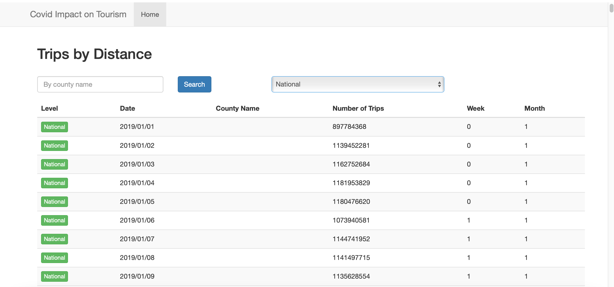

This is an analysis of how pandemic affected US tourism.
It's the graph for non-seasonally adjusted air traffic data. The max is around 87M passengers on July 2019. The min is 3.01M passengers on April 2020.
Source DataThis map shows the population that didn't stay at home during the pandemic. Based on the graph, we can find out people who are in CA, TX, and FL have the most people travel since the covid-19 broke out. The latest update is Feb 14th, 2022.
Source DataThis line graph shows the total trips based on date. According to the graph, the lowest point is on 12/25/2020, there were 1,572,709,800 trips in total. The highest point is before the covid, it is 4,707,067,898 trips on 6/7/2019. The latest update is Feb 14th, 2022.
Source DataThis bar graph shows the total trips based on levels. There are 1,339,975,173,009 people travel between counties, and 1,370,852,535,257 people travel between states. The latest update is Feb 14th, 2022.
Source DataThis following image shows the Trips by Distance database. People can use search box and filter to find the addtional information by clicking the read more link at the bottom left corner.
Camping near Crater Lake at the base of Lone Eagle Peak, Indian Peaks Wilderness. Photograph: Alamy
created with
Haichen Wei .